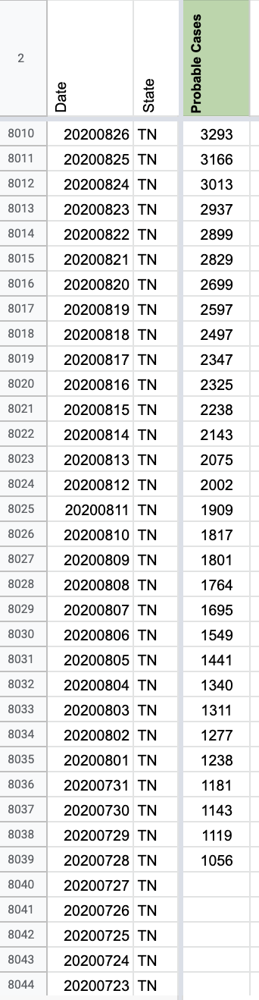

[TN] Probables backfill May 5-July 28
Issue number 795
jaclyde opened this issue on August 26, 2020 at 9:57 pm
Labels Data quality Historical Data not stale
State: Tennessee
Problem: We added a metric to store Probable Case data separately on July 28 and need to backfill the previous dates. Coincidentally TN updated late on 7/28/2020 so we initially entered the value from 7/27/2020 for 7/28. That value will be overwritten with the correct value from the state.
Action Plan:
- [x] Fix 7/28 from state xls (pos,neg,confirmed,probable)
- [x] Calculate probables from total-confirmed from 7/27-6/10
- [x] Back-fill probables from state xls for 5/4 - 6/9
Data Source: TN provides the full time series in a csv: https://www.tn.gov/health/cedep/ncov/data/downloadable-datasets.html Public-Dataset-Daily-Case-Info.XLSX
Comments
This issue has been automatically marked as stale because it has not had recent activity. It will be closed if no further activity occurs. Thank you for your contributions!
This issue has been closed because it was stale for 15 days, and there was no further activity on it for 10 days. You can feel free to re-open it if the issue is important, and label it as “not stale.”
BEFORE: 